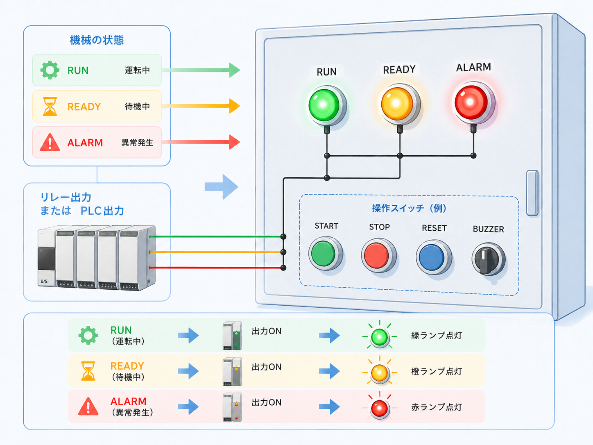
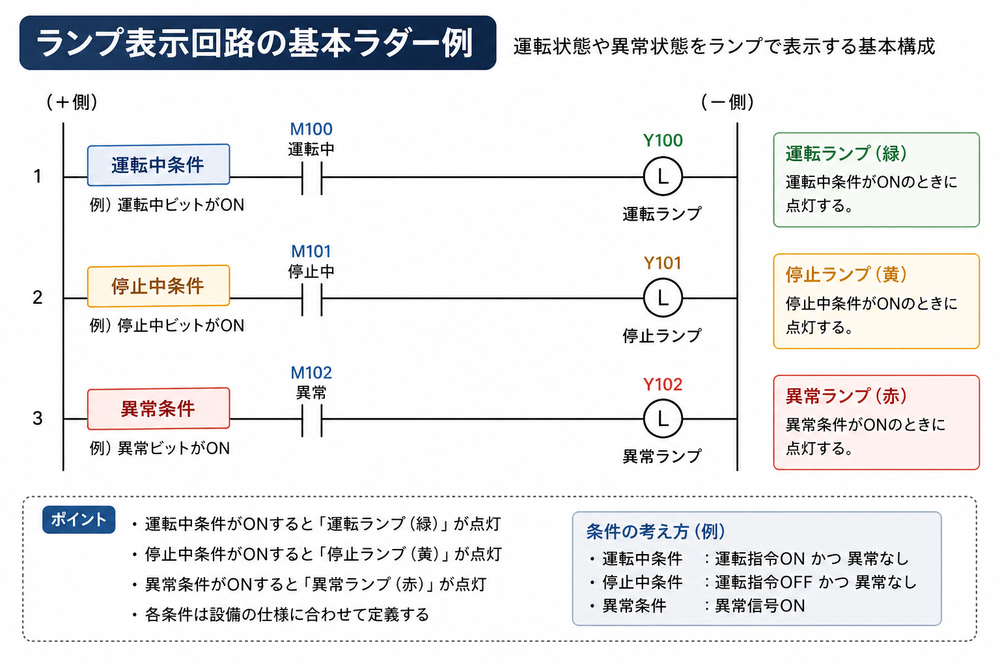
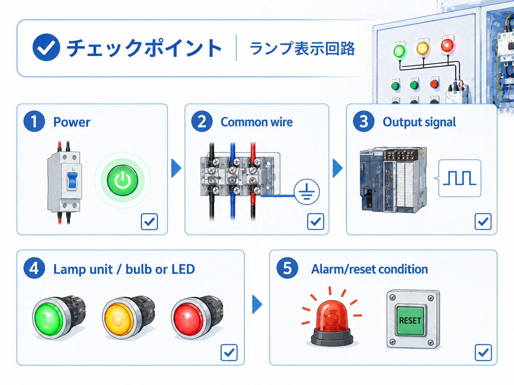

1. 先に結論
ランプ表示回路は、設備の状態を作業者がひと目で確認できるようにするための基本回路です。 運転中、停止中、異常中、準備完了などの状態を、表示灯やパイロットランプで知らせます。
回路としてはシンプルですが、現場ではかなり大事です。 ランプ表示が分かりにくいと、設備が動いているのか、止まっているのか、異常で止まっているのかを判断しづらくなります。
ランプ表示は「動かす回路」ではなく「状態を伝える回路」
モーターやシリンダを直接動かす回路ではありませんが、設備の状態を分かりやすく伝えるために重要です。 トラブル時にも、ランプ表示があるだけで原因の切り分けがしやすくなります。

先輩ランプ表示回路は地味だけど大事だよ。状態が見えるだけで、現場で迷う時間がかなり減るからね。

新人動かす回路ではないけど、設備の状態を伝えるための回路なんですね。
2. ランプ表示回路とは
ランプ表示回路とは、設備の状態に合わせて表示灯を点灯・消灯させる回路です。 操作盤の「運転」「停止」「異常」「準備完了」などの表示が、ランプ表示回路の代表例です。
PLCを使う設備では、PLCの出力から表示灯を点灯させることが多いです。 たとえば、運転中の内部リレーや異常条件がONした時に、運転ランプや異常ランプの出力をONするように考えます。

表示灯は現場の「今どうなっているか」を伝える
ランプの色や点灯条件は設備ごとに違いますが、基本は状態を分かりやすく伝えることです。 ランプ表示を見るだけで、運転中なのか、停止中なのか、異常停止なのかを判断しやすくします。
3. ランプ表示回路の基本構成
ランプ表示回路は、表示したい状態、PLC出力、表示灯、電源で考えると分かりやすいです。 ランプを点ける条件が成立した時に、PLC出力やリレー接点を通して表示灯へ電気を送ります。
表示したい状態
運転中、停止中、異常中、準備完了など、何を表示するかを決めます。
PLC出力
表示条件が成立した時に、表示灯を点灯させる出力です。
表示灯
操作盤や制御盤の前面で、作業者へ状態を知らせます。
電源
DC24Vなど、表示灯に合った電源が必要です。仕様確認が大切です。
ランプの色は設備ルールに合わせる
赤・緑・黄・白などの色の使い方は、設備や会社のルールで決まっていることがあります。 新しく追加する時は、既存設備の表示ルールに合わせるのが基本です。
4. よくある表示の種類
ランプ表示には、運転中、停止中、異常中、準備完了などがあります。 どの表示を出すかは設備によって違いますが、基本は「作業者が次に何をすればよいか分かる」表示にすることです。
| 表示 | 意味 | 現場での見方 |
|---|---|---|
| 運転中 | 設備が動作中 | モーターやシリンダなどが動作している、または自動運転中であることを示します。 |
| 停止中 | 設備が停止中 | 設備が停止している状態です。異常停止なのか通常停止なのかは別表示で分けると分かりやすいです。 |
| 異常中 | 異常が発生中 | 非常停止、サーマル、センサー異常などで設備が止まっている状態を知らせます。 |
| 準備完了 | 運転できる状態 | 電源、原点、エア圧、安全条件などがそろい、運転開始できる状態を示します。 |
異常表示は「何が悪いか」まで分かるとさらに良い
1つの異常ランプだけでも最低限の状態は分かりますが、異常内容が多い設備では、 表示灯やタッチパネル表示と組み合わせて、原因を追いやすくすることもあります。
5. ランプ表示回路の基本ラダー例
回路記事として見るなら、ランプ表示は「どの条件で、どの表示灯を点けるか」をラダーで確認すると分かりやすいです。 基本は、運転中条件がONなら運転ランプ、停止中条件がONなら停止ランプ、異常条件がONなら異常ランプを点灯させます。

- 運転ランプ：運転中条件がONした時に点灯します。
- 停止ランプ：停止中条件がONした時に点灯します。
- 異常ランプ：異常条件がONした時に点灯します。
- 条件の作り方：運転指令、停止状態、異常信号などを設備仕様に合わせて定義します。
停止ランプの条件は設備によって考え方が変わる
停止中ランプは、単純に「運転中ではない」で点ける場合もあれば、 「異常なし、停止中、運転準備完了」などの条件を組み合わせる場合もあります。 何を作業者へ伝えたいかで条件を決めるのが大切です。
6. GX Works3で見る時のポイント
GX Works3でランプ表示回路を見る時は、まず表示灯の出力コイルを探し、その左側にどんな条件が入っているかを確認します。 運転ランプなら運転中条件、異常ランプなら異常条件が入っているはずです。
ランプが点かない時は、出力コイルだけを見るのではなく、左側の接点がどこで切れているかを順番に追います。 入力、内部リレー、異常条件、リセット状態などを見ていくと、原因を切り分けやすくなります。
出力コイルを探す
まず運転ランプや異常ランプの出力がどこにあるか確認します。
左側の条件を見る
表示をONする条件が成立しているか、左から順番に追います。
内部条件を見る
運転中フラグ、異常フラグ、準備完了条件などを確認します。
実ランプ側も見る
ラダー上でONでも、配線・電源・ランプ本体側の異常で点かないことがあります。
この記事のラダー図は概念図です
実際のGX Works3では、使用PLC、出力番号、内部リレー、異常条件、タッチパネル表示などに合わせて設計します。 この記事では、初心者がランプ表示回路の考え方を追いやすいように簡略化しています。
7. ランプが点かない時の確認ポイント
ランプが点かない時は、ランプ本体だけを疑うのではなく、表示条件、PLC出力、電源、配線、ランプ本体を順番に確認します。 ラダー上ではONしているのに実際のランプが点かない場合は、出力側や電源側の確認が必要です。

表示条件
運転中、異常中、準備完了などの条件が成立しているか確認します。
PLC出力
GX Works3上で表示灯出力がONしているか確認します。
電源
表示灯に必要な電源が来ているか、電圧仕様が合っているか確認します。
配線
端子台、コネクタ、盤内配線に抜けや断線がないか確認します。
ランプ本体
表示灯の故障、LEDユニットの不良、接触不良がないか確認します。
表示ルール
点灯条件が思っている動作と合っているか、設備の仕様を確認します。
実機確認は安全を優先する
表示灯の確認でも、盤内電源や出力回路に触れる場合があります。 実機では設備仕様、社内手順、安全確認、メーカー資料に従って作業してください。
8. まとめ
ランプ表示回路は、設備の状態を作業者へ分かりやすく伝えるための基本回路です。 運転中、停止中、異常中、準備完了などを表示することで、現場での判断がしやすくなります。
GX Works3で見る時は、表示灯の出力コイルを探し、左側の条件を順番に追うのが基本です。 ランプが点かない時は、ラダー上の条件だけでなく、出力、電源、配線、ランプ本体まで確認します。
- ランプ表示回路は、設備状態を見える化する基本回路
- 運転・停止・異常などを条件ごとに分けて表示する
- GX Works3では、表示灯出力と左側の条件を順番に追う
- 点かない時は、条件・出力・電源・配線・ランプ本体を順番に見る